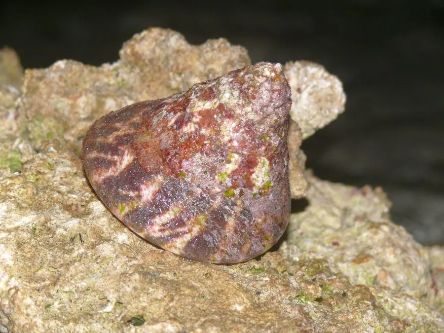

软体动物 · 动物界
大马蹄螺 Tectus niloticus

壳形巨大、壳口如马蹄的大型海螺，壳面有放射状斑纹，生活在珊瑚礁浅海，是重要的观赏和食用贝类。
- 分类
- 门软体动物门纲腹足纲目原始腹足目科马蹄螺科属马蹄螺属
- 栖息环境
- 热带珊瑚礁和岩礁的浅水区，水深数米至二十米
- 地理分布
- 印度洋至西太平洋热带海域，包括菲律宾、印度尼西亚、澳大利亚北部和中国南海
- 保护级别
- 尚无专门评估；种群受过度采捕影响
物种志
大马蹄螺的贝壳呈圆锥形，壳高可达十五厘米，壳质厚重，壳面呈灰白至浅褐色，有红褐色的放射状斑纹和细密的螺肋，壳口宽大，呈马蹄形，内面有珍珠光泽，口盖角质。足部肥大，吸力强，能吸附在礁石上。它的壳形宽阔，壳口像马蹄，马蹄螺之名由此而来。幼体螺层较少，成体后壳顶逐渐高起，壳形变得更加高耸。
它分布于印度洋至西太平洋的热带海域，包括菲律宾、印度尼西亚、澳大利亚北部和中国南海，栖息在珊瑚礁和岩礁的浅水区，水深数米至二十米，喜欢藻类繁茂、水流畅通的礁面。它以藻类为食，用齿舌刮食礁石表面，多在夜间活动。繁殖期在夏季，雌雄异体，幼虫经浮游阶段后附着到礁石上。大马蹄螺壳形美观、壳质厚实，可制工艺品和纽扣，肉也可食用，是热带海岛常见的采捕对象。目前尚无专门的保护评估，种群受过度采捕影响。
形态与习性
- 食性以藻类为食，刮食礁石表面
- 壳高可达十五厘米，壳质厚重
- 壳口宽大呈马蹄形，内面有珍珠光泽
- 栖息深度珊瑚礁浅水区，水深数米至二十米
- 活动多在夜间活动，白天吸附礁石
- 利用肉可食，壳可制工艺品和纽扣
趣味知识
- 大马蹄螺的壳口宽大像马蹄，是它得名的原因，也是区分近似种的依据。
- 它壳内面的珍珠层很厚，磨出来的成品泛着柔和的虹彩。
- 在热带海岛，大马蹄螺是常见的采捕对象，壳常被做成装饰品卖给游客。